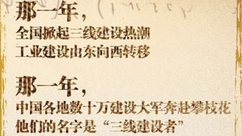

-

20世纪60年代
为满足备战需要，改变我国经济发展战略布局，国家启动“三线建设”，在中西部地区的13个省、自治区进行了一场大规模的国防、科技、工业和交通基础设施建设。
-

1954年4月22日-28日
地质部在北京召开了全国第一次地质勘察工作会议。会后，地质部对攀西地区进行地质普查。
-
1958年
地质部向国家正式提交了《攀枝花钒钛磁铁矿计算报告书》，其中提到查明的“工业储量”为10亿吨。
-
1958年3月9日-26日
中央工作会议在成都召开。毛主席批准了冶金部建设西昌钢铁厂的设想，攀枝花的开发由此提上了国家建设的日程。
-

1964年9月
交通施工队伍和建工部云南建筑总公司组建的工地先后进入攀枝花。
-

1966年底
攀枝花水陆交通运输网基本建成。
-

1971年
施工队伍达79116人，为一期工程施工期间人数最多的一年。
-

1978年以后
部分全民所有制施工企业成建制调往外地，集体所有制建筑业迅速发展。
-
2015年
攀枝花在建市50周年之际建成了建筑面积2.4万平方米的三线建设博物馆，攀枝花中国三线建设博物馆已成为国内展陈面积最大、馆藏资源最全、社会影响最广泛的三线建设主题博物馆。